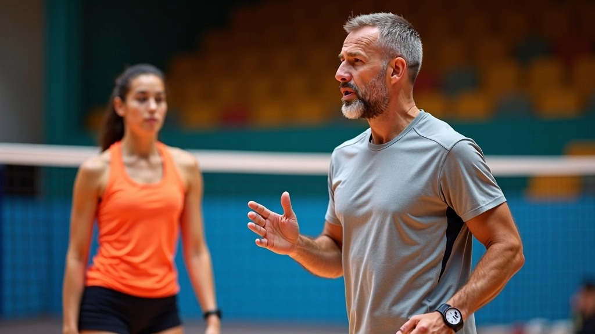
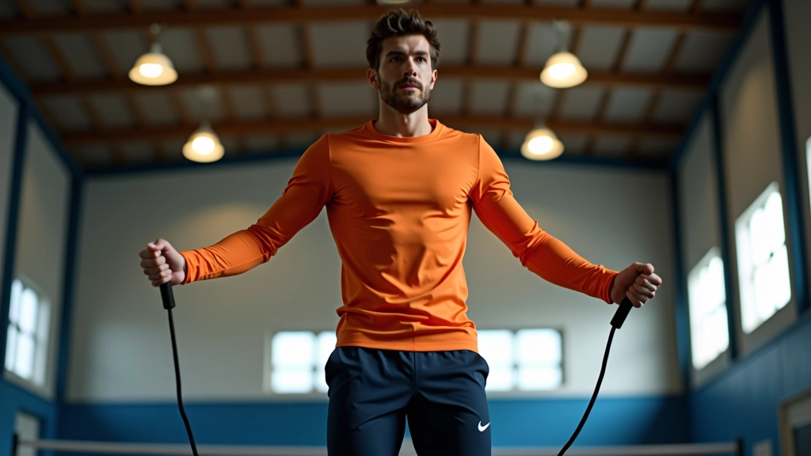

تقنية الذراع الصحيحة للهجوم السريع
شرح تفصيلي لحركة الذراع والمعصم التي تزيد من دقة الضربة وقوتها مع تقليل الإصابات...
تمارين متخصصة لزيادة قوة الساقين والقدرة على القفز العالي بشكل متكرر دون إرهاق

القفز العالي السريع هو ما يفرق بين لاعب وسط متوسط ولاعب حقيقي. المُوزِّع يرسل الكرة بسرعة، والدفاع ينتظرك. لديك ثوان فقط لتقرر وتقفز وتضرب. إذا كنت بطيء، الكرة تمر أمامك أو تصل بعد فوات الأوان. لكن إذا كنت سريع وعالي، أنت تسيطر على الشبكة.
نعم، القوة مهمة. لكن السرعة؟ السرعة هي اللعبة الحقيقية. تمارينك يجب أن تركز على القدرة على القفز مرات متعددة بسرعة، ليس مرة واحدة عالية جداً.
ابدأ بصندوق ارتفاعه 30-40 سم. القفز من الأرض وصعود الصندوق والنزول بسرعة. ثم قفز مباشرة مرة أخرى. هذا يعلم جسدك كيفية امتصاص الطاقة والعودة بسرعة.
ابدأ بـ 3 مجموعات من 8 قفزات. بعد أسبوعين، زيادة إلى 10 قفزات. المفتاح هو السرعة، ليس الارتفاع. يجب أن تكمل 8 قفزات في حوالي 12 ثانية. إذا استغرقت وقت أطول، فأنت بطيء جداً.
نصيحة مهمة: لا تستريح أكثر من 10 ثوان بين القفزات. جسدك يجب أن يتعلم القفز وهو متعب قليلاً. هذا ما يحدث في المباراة.

قفز عالي من الثبات دون خطوة تقريب. قفز أفقي بقدميك معاً. هذا يبني القوة المتفجرة الحقيقية. لا توجد خطوة للجري. فقط قفز.
اهدف إلى 5 مجموعات من 6 قفزات، كل قفزة أقصى ارتفاع. استريح دقيقة كاملة بين المجموعات. قس ارتفاعك باستخدام علامة على الجدار أو بطريقة بسيطة: ضع علامة حيث تصل يدك.
تتبع تقدمك: بعد 4 أسابيع، يجب أن تلاحظ فرق 5-8 سنتيمترات. إذا لم تر تحسن، قد تكون تحتاج إلى مزيد من الراحة بين الجلسات.
ملاحظة مهمة: هذه التمارين مصممة لأغراض تعليمية. كل شخص لديه احتياجات جسدية مختلفة. إذا كنت تشعر بألم حاد، توقف واستشر مدرب مؤهل أو أخصائي طبي. التدريب الآمن أهم من السرعة.
حبل قفز بسيط. لا تحتاج إلى معدات غالية. قفز سريع وخفيف على كرات القدم. هذا يحسن ردة الفعل والتوقيت.
قم بـ 5 جولات من 60 ثانية قفز سريع، مع 30 ثانية راحة بين كل جولة. في البداية، قد تكون متعب. لكن بعد أسبوعين، ستشعر أن الساقين أخف وأسرع. هذا التمرين يشبه ما يحدث في المباراة — قفزات متكررة سريعة.

القفز بدون قوة = لا شيء. تمارين القوة ضرورية. اسكوات بوزن خفيف، 3 مجموعات من 12 تكرار. بعد أسبوع، زيادة الوزن قليلاً.
لا تحتاج إلى وزن ثقيل جداً. الهدف هو تحسين القوة والتحمل. إذا كنت تستطيع فقط 5 تكرارات، فالوزن ثقيل جداً. يجب أن تستطيع إكمال 12 مع جهد معقول.
تحسين سرعة القفز ليس سحراً. يحتاج إلى عمل منتظم. تمرين القفز المتكرر على الصندوق، قفزات الحبل السريعة، والقفزات من الثبات — هذه التمارين الثلاث ستغير قدرتك في حوالي شهر واحد.
المفتاح هو الاستمرار. مرتين أو ثلاث مرات في الأسبوع كافي. لا تحتاج إلى تمرين كل يوم — ستصاب بالإرهاق. وتذكر، القوة تأتي من التمارين المنتظمة، وليس من جلسة واحدة مكثفة.
اكتشف تمارين أخرى لتحسين مهاراتك في الهجوم السريع
شرح تفصيلي لحركة الذراع والمعصم التي تزيد من دقة الضربة وقوتها مع تقليل الإصابات...

تمارين عملية لمزامنة حركتك مع توقيت وصول الكرة من المُوزِّع بدقة عالية...

تعلم كيفية تحليل تشكيلة الدفاع الخصم واختيار نوع الهجوم السريع الأنسب في كل موقف...